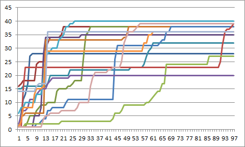
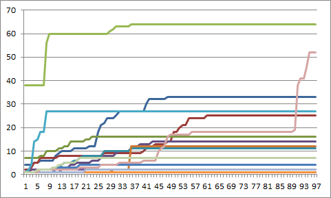

I had to compile some data on signups anyway, so here's a graph showing cumulative registration per workshop over time (counting from the day registration opened) for past workshops:

and for upcoming workshops (excluding two that just opened up):

Doing a bit more analysis, this spring's workshops filled up a lot faster than the ones we're running this fall. I think the main reason is that those ones were organized and advertised while school was on, while the upcoming series have been set up over the summer. We'll repeat the analysis in a few months to see if that hypothesis holds.
Originally posted 2012-09-06 by Greg Wilson in Bootcamps.
comments powered by Disqus